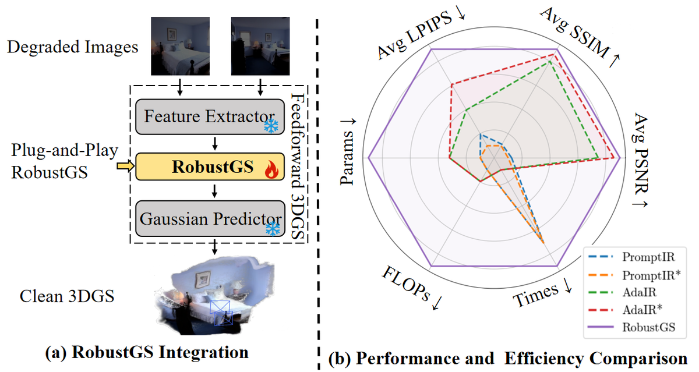

RobustGS：低质量下前馈 3D 高斯泼溅的统一增强
简单摘要
近年来3D重建从神经隐式方法向显式表示转变，3DGS凭借对场景几何和外观的显式紧凑建模，在重建保真度和渲染效率上显著超越NeRF。近期前馈变体利用神经网络从输入图像单次生成3D高斯表示，绕过了逐场景优化的需求。然而这些方法通常在干净、光照良好、无伪影的精心策展数据集上训练和评估。在实际场景中，输入图像常呈现各种退化（噪声、恶劣环境或挑战性光照条件），严重影响特征提取和匹配，导致几何不完整、细节丢失或重建失真。直接方案是对退化输入进行图像复原预处理或增强渲染新视图，但大多数复原网络以优化图像空间感知质量为目标而非确保多视图间的几何一致性。若干近期研究（如WeatherGS针对雨雪场景）探索了使3DGS适应退化输入的方法，但依赖逐场景优化且仅针对有限退化类型。该工作提出通过增强特征表示来提升前馈3DGS方法在多样未知退化下的鲁棒性：设计了一个即插即用的通用特征增强模块，可无缝集成到现有方法中，无需重新训练。

核心创新
(1) 即插即用的通用特征增强模块，可无缝集成到现有前馈3DGS方法中，无需重新训练原管线；(2) 退化感知特征提取模块：从多视图输入中提取多种退化的通用表示和分布；(3) 语义感知状态空间跨视图增强机制：利用退化表示引导跨视图特征级交互，选择性传播和聚合语义相关特征；(4) 不同于WeatherGS等方法仅针对特定退化类型且依赖逐场景优化，该方法面向多样未知退化，具备通用性和前馈效率。
技术细节
为了增强前馈 3DGS 在退化场景下的鲁棒性，我们提出了一种即插即用、统一的特征增强框架。如图（左）所示，整体框架高效且广泛适用于前馈 3D 重建方法，从而在各种退化条件下提高性能。这种训练机制能够以自我监督的模式进行学习，这样它就可以携带足够的退化线索，在与干净的内容结合时重建观察到的损坏的输入。
3 提议的方法
为了增强前馈 3DGS 在退化场景下的鲁棒性，我们提出了一种即插即用、统一的特征增强框架。首先，我们提出了一种从输入图像中提取紧凑且可概括的退化表示的方法。如图（左）所示，整体框架高效且广泛适用于前馈 3D 重建方法，从而在各种退化条件下提高性能。作者这样设计，是为了把这一节的输入、约束和输出关系讲清楚。
3.1 统一退化表示学习
围绕 3.1 统一退化表示学习，捕获特定于降解的线索，以在下游阶段实现条件感知增强。这种训练机制能够以自我监督的模式进行学习，这样它就可以携带足够的退化线索，在与干净的内容结合时重建观察到的损坏的输入。为了鼓励嵌入捕获与退化相关的特征，我们通过两个互补的目标来优化模块。
这鼓励相似退化的嵌入更加接近，同时将不同类型分开。通过 、 、 和 的联合优化，嵌入模块学习以重构、区分、语义上与退化类别一致的方式表示退化。这种退化感知信号可作为下游模块功能级增强的高级调节线索。
$$ \mathcal{L}_{\mathrm{rec}} = \lambda\| \hat{I}_{\mathrm{deg}} - I_{\mathrm{deg}} \|_1 + \mathcal{L}_{\mathrm{perc}}(\hat{I}_{\mathrm{deg}}, I_{\mathrm{deg}}). $$
这条式子给出了噪声预测训练目标：模型在随机时间步接收带噪输入和条件信息，然后尽量把真实噪声估计准确。训练好这一项之后，反向采样时才能稳定地把噪声状态一步步拉回真实场景分布。
$$ \mathcal{L}_{\mathrm{con}} = -\log \frac{\exp(\mathrm{sim}(z_i, z_j)/\tau)}{\sum_{k \ne i} \exp(\mathrm{sim}(z_i, z_k)/\tau)}. $$
这条式子是在定义一个可直接计算的中间量：右侧把相对位置、方向、权重或比例关系组合起来，左侧则把这个组合结果记成后续模块要反复使用的变量。
$$ \mathcal{L}_{\mathrm{cls}} = \mathrm{CrossEntropy}(f_{\mathrm{cls}}(z_{\mathrm{deg}}), y_{\mathrm{deg}}). $$
放在“提议的方法”这一部分看，它重点在定义或约束 L cls 这一项。这条式子给出了训练阶段的优化目标。阅读时可以先看左侧到底在约束什么，再区分右侧每一项对应的是重建误差、正则项还是辅助监督。
3.2 多视图功能增强
为了解决前馈 3DGS 管道中的特征退化问题，我们引入了。我们的方法旨在提高从退化的多视图图像中提取的中间特征的质量，从而为下游 3D 重建提供更清晰、更可靠的特征。为了在未知的退化情况下实现鲁棒的一体化特征增强，我们引入了一种退化感知调制机制，该机制可以根据退化特征动态调整选择性扫描过程。作者这样设计，是为了把这一节的输入、约束和输出关系讲清楚。
如图（c）所示，退化嵌入主要调节输入投影矩阵 ，该矩阵控制如何将退化的输入标记集成到隐藏状态中。通过调节增强参数，该模型可以恢复退化区域并在不同场景中更好地保留语义结构。这种设计可以实现统一的功能增强，而不需要针对退化进行调整，从而使该模块可适用于不同的退化场景。 lazy' decoding='async' />
| — | Brightness | Fog | Contrast | Snow | ||||||||
|---|---|---|---|---|---|---|---|---|---|---|---|---|
| — | PSNR | SSIM | LPIPS | PSNR | SSIM | LPIPS | PSNR | SSIM | LPIPS | PSNR | SSIM | LPIPS |
| Pixelsplat | 15.03 | 0.7919 | 0.1753 | 14.88 | 0.7321 | 0.2044 | 18.40 | 0.7195 | 0.2453 | 19.15 | 0.5809 | 0.4297 |
| PromptIR | 14.31 | 0.7664 | 0.1797 | 21.50 | 0.8160 | 0.2043 | 18.30 | 0.7161 | 0.2440 | 19.87 | 0.6151 | 0.4089 |
| PromptIR72 | 16.99 | 0.7811 | 0.1897 | 21.33 | 0.8100 | 0.2031 | 21.80 | 0.8047 | 0.2197 | 21.46 | 0.6794 | 0.3844 |
| PromptIR73 | 23.91 | 0.8431 | 0.1645 | 20.35 | 0.8034 | 0.2145 | 16.29 | 0.6770 | 0.2557 | 17.13 | 0.6085 | 0.4404 |
| AdaIR | 14.78 | 0.7817 | 0.1775 | 20.91 | 0.8146 | 0.1994 | 18.37 | 0.7197 | 0.2457 | 19.72 | 0.6151 | 0.4049 |
| AdaIR72 | 23.59 | 0.8501 | 0.1527 | 15.40 | 0.7115 | 0.2709 | 16.88 | 0.7064 | 0.2315 | 16.29 | 0.5908 | 0.4458 |
| AdaIR73 | 23.45 | 0.8493 | 0.1631 | 15.54 | 0.6018 | 0.4518 | 15.37 | 0.6750 | 0.2560 | 15.54 | 0.6018 | 0.4518 |
| RobustGS | 24.87 | 0.8512 | 0.1617 | 21.52 | 0.8209 | 0.1974 | 22.05 | 0.8062 | 0.2147 | 20.78 | 0.6495 | 0.4003 |
| — | mvsplat | PromptIR | PromptIR72 | PromptIR73 | AdaIR | AdaIR72 | AdaIR73 | RobustGS |
|---|---|---|---|---|---|---|---|---|
| Avg PSNR | 17.20 | 18.57 | 20.04 | 19.31 | 18.43 | 19.58 | 18.14 | 21.48 |
| Avg SSIM | 0.7307 | 0.7512 | 0.7726 | 0.7476 | 0.7499 | 0.7601 | 0.7425 | 0.7851 |
$$ \dot{h}(t) = A h(t) + B x(t), \ y(t) = C h(t) + D x(t), $$
放在“提议的方法”这一部分看，这条式子重点不是孤立地罗列符号，而是交代 这一项中间量 如何承接前面的输入并把结果交给后续步骤。
$$ \overline{A} = \exp(\Delta A), \ \overline{B} = (\Delta A)^{-1} (\exp(\Delta A) - I) \Delta B, $$
放在“提议的方法”这一部分看，这条式子重点不是孤立地罗列符号，而是交代 A 如何承接前面的输入并把结果交给后续步骤。
$$ h_k = \overline{A} h_{k-1} + \overline{B} x_k, \ y_k = C h_k + D x_k. $$
放在“提议的方法”这一部分看，这条式子重点不是孤立地罗列符号，而是交代 h k 如何承接前面的输入并把结果交给后续步骤。
$$ W_{\text{mod}} = W \odot \phi_W(z_{\text{deg}}), \quad W \in \{B, C, \Delta\}. $$
放在“提议的方法”这一部分看，这条式子重点不是孤立地罗列符号，而是交代 W mod 如何承接前面的输入并把结果交给后续步骤。
$$ \mathbf{w}_i = \mathrm{GumbelSoftmax}(\mathrm{sim}(\mathbf{e}_i, \mathcal{P})). $$
这条式子是在把高斯的协方差从原始三维坐标系变换到相机或成像平面相关的坐标系中。这样后续光栅化时，模型才能正确知道每个高斯在当前视角下会拉伸成怎样的椭圆分布。
$$ C_i^{\text{mod}} = C + \sum_{k=1}^K w_{ik} \cdot \mathbf{p}_k. $$
放在“提议的方法”这一部分看，它重点在定义或约束 C i mod 这一项。这条式子描述了多个分量的聚合或逐步合成过程。它通常表示模型如何把局部贡献、概率权重或多项损失累积成最终结果。
实验结论
实验设置
**训练策略。** 首先在DIV2K数据集上训练，遵循RobustSAM的退化协议合成多种低质量变体。随后在RealEstate10K(RE10K)数据集上训练，使用与GenDeg阶段相同的退化合成协议。RE10K提供多视图视频序列以及通过COLMAP SfM估计的相机位姿。为与现有前馈3DGS流水线一致并确保公平比较，采用前人工作的官方训练和测试划分，在256×256分辨率训练。仅使用约10%的RE10K训练数据即可达到竞争力结果。
**评估指标。** 使用PSNR、SSIM和LPIPS评估新视角合成质量。
**基线设置。** 与两个SOTA图像恢复基线PromptIR和AdaIR在三种设置下比较：(1) 使用官方预训练权重；(2) 在退化设置下重训练恢复模型后再重建；(3) 调换流水线顺序重建在恢复之前。
主要结果
**像素级性能提升。** 将RobustGS模块集成到前馈3DGS框架PixelSplat中，在多种退化场景和评估指标上都带来一致且显著的性能提升。与SOTA通用图像恢复方法相比，无论是重建前应用还是渲染后应用，RobustGS在平均PSNR、SSIM和LPIPS上均展现明显优势。
**跨骨干泛化。** 将RobustGS集成到另一个主流前馈3DGS骨干MVSplat中，在所有指标上持续取得竞争力性能。
**计算效率。** RobustGS模块不仅带来显著性能增益，其参数量、FLOPs和运行时间均低于现有图像恢复方法。
定性分析
在暗光和雾天两种代表性退化场景下，IR方法虽在单视图增强中有效，但无法确保多视图间的几何一致性，常导致渲染伪影。而RobustGS在特征层面显式建模跨视图一致性，有效抑制此类伪影。中间特征图可视化显示，RobustGS增强后的特征成功去除了原始特征中的大部分退化伪影。
消融实验
退化嵌入策略对比和语义引导的token重排序评估均验证了各组件设计的有效性。完整设计在所有消融中持续取得最优性能。通过t-SNE可视化退化嵌入，不同退化类型的嵌入形成明显分离的簇，展示了其判别能力和泛化性。